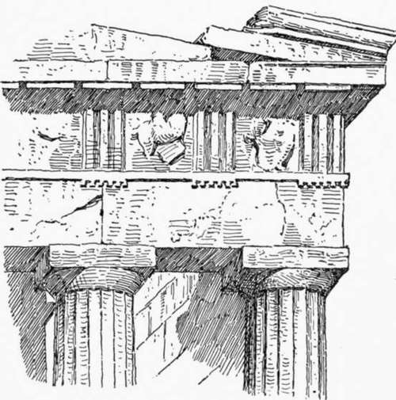
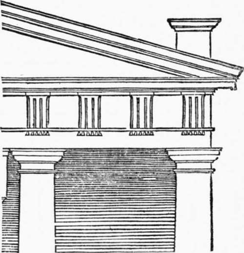
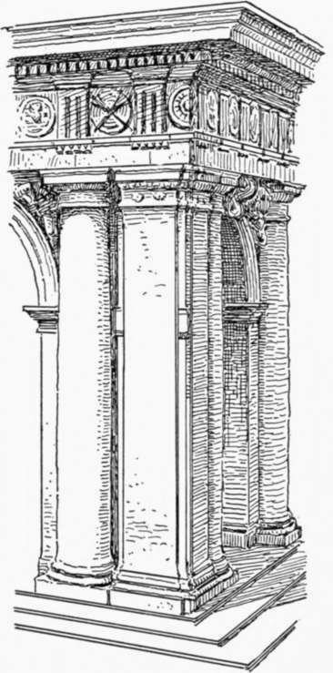
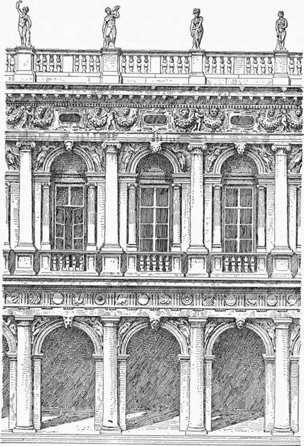

Palace Architecture Of The Roman Renaissance. Part 3
Description
This section is from the book "Character Of Renaissance Architecture", by Charles Herbert Moore. Also available from Amazon: Character of Renaissance Architecture.
Palace Architecture Of The Roman Renaissance. Part 3
After the early part of the sixteenth century Italy, as before remarked, produced few architects of a high order of genius. The later architecture of the Renaissance is the work of men of little genuine artistic inspiration, though many of them had great enthusiasm for what they conceived to be the true principles of the art and unbounded zeal in its practice. A few typical examples of the later forms of palatial design by such men as Sansovino, Sanmichele, Vignola, Palladio, and Scamozzi will be enough for us to consider. All of these men based their practice theoretically, as we have seen, on the writings of Vitruvius and on a rigorous study of the architectural remains of Roman antiquity; and nearly all of them wrote treatises on their art which have formed the basis of most modern practice.
Jacopo Tatti, called Sansovino, went to Rome early in the sixteenth century in company with Giuliano de San Gallo, and there formed a friendship with Bramante,1 under whose influence he acquired that exclusive predilection for classic forms which we find reflected in his art. Coming to Florence, we are not told in what year, he designed a false front of wood for the cathedral church of Santa Maria del Fiore, which is said to have called forth the admiration of Pope Leo X.1 This incident is significant of the spirit of the time, and such architectural shams were extensively produced by the architects of the later Renaissance. The most important works of Sansovino are in Venice, where he built the well-known Library of St. Mark, the so-called Loggia of the Campanile, the Palazzo Cornaro, and several other large buildings.
1 Milizia, vol. i, p. 346.
The facade of the Library of St. Mark has but two stories including the basement, and these are adorned with a Doric and an Ionic order respectively (Fig. 65); the first noticeable peculiarity of this design is its very florid character. The reveals are deep, the orders are in high relief, and the friezes and arch spandrels are loaded with showy ornamental carvings. Milizia says2 that in the Doric order of this fagade Sansovino attempted .to solve a problem which had troubled all of the Italian architects, namely, how to make exactly half of a metope fall at the end of the frieze. The Greeks had placed a triglyph at the angle, but in so doing they had been obliged to sacrifice uniformity, since this angle triglyph fell over one side of the corner column, instead of over its centre as the other triglyphs of the series did (Fig. 66). This had made it necessary to lengthen the last metope, and to narrow the last intercolumniation. The Romans had set the last triglyph over the centre of the corner column, and had thus been obliged to give less than half a metope to the corner (Fig. 67), though they secured uniformity in all the rest of the parts. The frieze, however, had now an appearance of incompleteness at each end, as of a thing cut off arbitrarily through one of its members. The architects of the Renaissance appear to have disliked this narrow section of a metope at the end of the frieze, and to have sought a way to make it exactly half. This, as Milizia tells us, Sansovino did in the Library of St. Mark by lengthening the frieze enough to give the fragment of metope the width that was desired. Turning to the design itself (Fig. 68), we find that this obliged him to set a square pier with a pilaster on its face at the angle. Of this device Milizia remarks that it was a folly.1
Fig. 66. — Corner of the Parthenon.
Fig. 67. — Roman corner.
Fig. 68. — Angle of Library of St. Mark.
1 Milizia, vol. i, pp. 346-347. 2 Ibid., p. 351.
In the general scheme of this fagade (Fig. 65) Sansovino has followed that of the ancient theatre of Marcellus, with a free introduction of additional enrichments. In the order of the basement he has departed from the severe plainness of the Roman model by adding mouldings and keystones to the archivolts, reliefs to the spandrels, and disks to the metopes of the frieze. But all this is done with a commendable feeling for breadth of effect. To the order of the upper story he has made more striking additions, the most noticeable of which is the insertion of a small free-standing column on each side of the pier to bear the archivolt, an innovation which was followed by Palladio and many later architects. The least admirable features of the design are the frieze of the upper order, which is widened beyond all tolerable proportion, and an ornamental balustrade over the main cornice. The frieze is ornamented with inelegant festoons in high relief, and pierced with oblong windows opening into a low upper story which the entablature encloses. The columns of the upper order, as well as the free-standing colonnettes, are raised on panelled pedestals, and balustraded balconies are formed in front of each window opening. This sumptuous scheme embodies very fully the ideal to which the designers of the Renaissance had been tending under the Roman influence of the sixteenth century, and it has been extensively reproduced, with various minor modifications, in the civic architecture of all parts of Europe.
Fig. 65. — Part of facade of the Library of St. Mark.
1 " Sansovino lo sciolse con allungar il fregio quanto bastasse per supplire al difetto di quella porzione di metopa: ed il problema, e '1 ripiego sono un' inezia."
As the facade of the Library of St. Mark is based upon that of the ancient theatre of Marcellus, so the Loggetta of the Campanile is an adaptation of the scheme of the Arch of Titus extended to include three arches, and enriched with statues and reliefs to suit the florid fancy of the time. But while the scheme is plainly derived from the Arch of Titus, the proportions of the parts are very different, and much less admirable.
Continue to:
- prev: Palace Architecture Of The Roman Renaissance. Part 2
- Table of Contents
- next: Palace Architecture Of The Roman Renaissance. Part 4